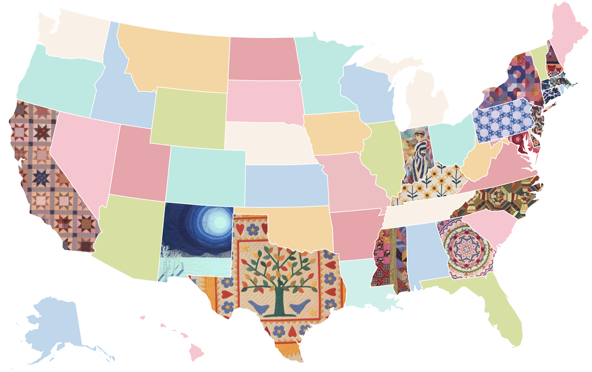
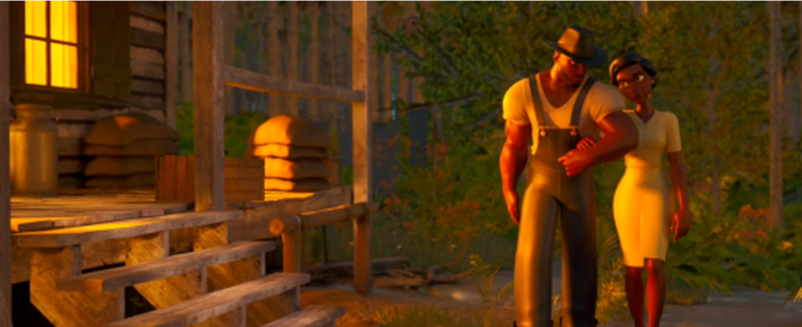

Remixing
The American
Story
Insights from
the Connecting Communities
Digital Initiative

The Connecting Communities Digital Initiative (CCDI) launched in 2021 as part of the Library of Congress's Of the People: Widening the Path initiative, funded by the Mellon foundation, with a bold and timely mission: to expand participation in the creation, interpretation, and sharing of American history.
Impact at-a-glance
$1M+
Total Funds Awarded
30+
Number of Projects
16
Number of States
350+
Collection Items Used
2022
Piecing the First Square
Much like a quilt, CCDI's first year stitched together community voices, artistic interpretations, and historical research, laying the foundation for a patchwork of stories created by Black, Indigenous, and other communities of color who engaged with the Library's collections.
In Kentucky, the Kenton County Public Library hosted “Crafting Stories, Making History,” a project designed to explore the rich history of African Americans in the historically Black Eastside neighborhood. Collaborating with local artists, KCPL facilitated artist residencies, mini-grants, community fellowship programs, and community events, where residents created works inspired by the Eastside and its relationship to Library of Congress materials.
At Huston-Tillotson University, student artists in residence reimagined Library of Congress collections related to the Harlem Renaissance by remixing them into digital and physical works, including collages and a digital mosaic triptych. Their artworks fused 1920s and 1930s cultural scenes with contemporary experiences and culminated in an online exhibition.
Junior Fellows expanded this interpretive work by developing StoryMaps using Library of Congress materials to explore themes of migration, community, and resistance. Their projects visualized a wide range of topics, from Japanese higher education under World War II incarceration and Black labor ecologies to Persianate expressions of love through poetry and painting, turning archival research into map-based explorations of history.
Building on this momentum, Maya Cade brought a curatorial and research-focused lens to CCDI's mission by turning to the Library's film archives. As CCDI's first Scholar in Residence, she explored how tenderness, which she defines as “pointed moments of affection,” functions as a cultural and emotional thread in Black cinema. Through deep research at the Library of Congress, digital curation, and the creation of an experimental short film, Cade expanded her Black Film Archive, which features culturally and historically significant Black films from 1915 to 1979, and proposed a new way of understanding Black film history through the presence and power of tenderness.
2023
In the Making
In CCDI's second year, storytelling projects moved
outward—toward questions of justice, language, and place.
Grantees activated archives through research, public history,
immersive art & intergenerational dialogue. At Houston
Community College, students and faculty from across
disciplines used the Library's Alan Lomax Collection to
explore the history of Southern incarceration, producing
original art, music, film, and research that traced the legacy
of convict leasing into the present.
Extending this focus on place-based memory, the University of
New Mexico's “Remember the South Broadway” project documented
the history of Albuquerque's first African American
neighborhood. Through oral histories, digital zines, and 3D
reconstructions informed by Sanborn maps, the project brought
to life the businesses and civic spaces that defined Black
placemaking in South Broadway, a community shaped by
segregation, strengthened through activism, and remembered
through storytelling.
Shifting the lens to Kentucky, Boone County Public Library researchers explored Library of Congress collections to uncover the lives of enslaved and freedom-seeking African Americans from 1798 to 1865. Using collections like Born into Slavery, they created a searchable database, a research landing page, and a virtual exhibit hosted on the African Americans of the Kentucky Borderlands website. The project connects people, places, and events to tell a richer story of the region's Black history.
At Guild Hall in East Hampton, NY, Shinnecock artists with the First Literature Project advanced language revitalization efforts through poetry, archival research, and immersive media. Led by linguist and Community Artist in Residence Wunetu Wequai Tarrant, the Ayim Kutoowonk collective produced the first Shinnecock-language video resources. Their work was featured in a public exhibition using virtual reality and 3D storytelling to reimagine the act of sitting face-to-face with a storyteller, bringing ancestral language & intergenerational knowledge into a contemporary cultural space.

Following a shared commitment to storytelling across time and form, the Historical Society of Pennsylvania (HSP) launched Resurrecting Voices, a podcast series exploring the Black experience in Philadelphia. Drawing on materials from both HSP and the Library of Congress, each episode blended archival research with narration, music, and interviews to illuminate 19th- and 20th-century figures, like William Still and Dox Thrash.
Continuing this work of historical interpretation, Junior Fellows developed a series of research guides that explored identity, activism, and creative expression. Their projects ranged from African American hair and early 20th-century Black political organizing to queer Latinx print culture, Asian textiles, and Asian American movements of the 1960s and '70s. These guides offered fresh entry points into underrepresented histories and embodied CCDI's mission to connect archival materials with contemporary communities. Bringing archival interpretation into the realm of creative practice, Ide Amari Thompson and Madeline Toombs created At the Table with: Mary Church Terrell, an interactive poetry and writing interface inspired by Terrell's words. Drawing on her diaries, letters, and speeches, the tool generates creative prompts for writers, transforming the Terrell Papers into a resource for poetic practice and collective imagination.
2024
Layer by Layer
In 2024, CCDI awardees turned to sound, image, and multimedia to explore identity, memory, and place. Across the country, projects used auditory, visual, and sensory storytelling to anchor archival work in lived experience.
In Washington, DC, the DC Public Library spotlighted Ethiopian American communities through oral storytelling and collaborative exhibitions. At Angelo State University, students and faculty explored the local histories of Black and Hispanic communities in West Texas, using Library of Congress collections to connect national narratives with regional experience. Their research culminated in an interactive StoryMap that blended maps, multimedia, and narrative to ground memory in place. At the University of Houston-Downtown, students remixed archival maps, photographs, and recordings from the Library's digital collections to create StoryMaps tracing the migrations and origins of Afro-Latinos in the United States.
At Indiana University, Indigenous artists and curators Debra Yepa-Pappan, Molina Two Bulls, and Yatika Starr Fields reinterpreted early 20th-century photographs and wax cylinder recordings from the Edward S. Curtis and Joseph K. Dixon collections. Through hybrid physical and virtual exhibitions, they used 3D environments and curatorial storytelling to center Indigenous agency and creativity. In Hoboken, New Jersey, the Hoboken Public Library traced the evolution of its Puerto Rican community through a multimedia timeline and digital archive. And in New Mexico, Friends of Tijeras Pueblo collaborated with Isleta Pueblo elders to create a zine combining historical and contemporary images, a digitally interpreted mural with Tiwa and English narration, and a video documenting Pueblo weaving, linking past and present through language, memory, and material culture.
Sound emerged as a central mode of inquiry and imagination in 2024. Dr. Allie Martin, one of CCDI's Artists/Scholars in Residence, created Sampling Black Life, a body of soundscape compositions layered with archival audio, original music, and field recordings. Her methodology, “sampling with critical intention,” draws from Black musical traditions to position listening and sampling as both a historical lens and an ethical practice. Dr. Allie Martin's work inspired Junior Fellows Jonathan Walton and Janiya Peters to develop sound-based projects of their own. Walton created a sound collage that wove together the voices and ambient recordings of arts communities of color across the United States, illustrating their deep interconnection through shared creative expression. Peters composed “The Gin in Motion,” a sonic meditation on the cotton gin, race, and labor, sampling Library collections and oral histories to explore the politics of technology through sound.
SOUNDSCAPES
Visual art also took on new life in 2024. With “Whippersnappers,” Artist/Scholar in Residence Maya Freelon reimagined archival photographs of enslaved children through vibrant, layered portraits. Her mixed-media work challenged the constraints of historical representation by infusing images with color, joy, wonder, and possibility.
These projects underscored CCDI's mission to make historical collections more accessible and resonant, using digital tools not just for preservation, but for creative reinterpretation and storytelling.
Robert & Tommy Bagby, 5 [&] 8 years, March 4th 1868, Richmond, Va. / C. Campbell's Celebrated Photograph Gallery. Retrieved from the Library of Congress, loc.gov/pictures/item/2010650828/
Shyshine, 44”x80”, Tissue Ink Monoprint and Archival Print, 2024
We got you covered, 24”x40”, Tissue Ink Monoprint and Archival Print, 2024
Young Africa; or, the bone of contention Retrieved from the Library of Congress, loc.gov/pictures/item/2010647931/
Unidentified young African American girl in dress with hat on chair Retrieved from the Library of Congress, loc.gov/pictures/item/2022631724/
Complex, 24”x40”, Tissue Ink Monoprint and Archival Print, 2024
Rounding out the year's creative experimentation, AHHA intern Anaya Patel reimagined Zora Neale Hurston's 1925 short story “Spunk” as an animated film and interactive 3D experience. Drawing on archival materials, including field recordings from the Florida Folklife from WPA Collections, 1937-1942, Patel crafted a historically grounded soundscape that brings Hurston's Eatonville to life.
{kind=link}
{kind=link}
{kind=link}
{kind=link}
{kind=link}
{kind=link}
{kind=link}
{kind=link}
{kind=link}
{kind=link}
{kind=link}
{kind=link}
Martha's Vineyard Activation
At Martha's Vineyard, Artists/Scholars in Residence Dr. Allie Martin and Maya Freelon joined CCDI's Senior Innovation Specialist Dr. Kimber Thomas for a public conversation on preserving Black history through sound and art. The activation blended live participation with archival sound and visual storytelling. Martin led a live soundscape mixing session using Library recordings, while Freelon guided participants through a tissue quilt workshop that explored memory through color and form.
CCDI by the Numbers
Across three years, CCDI supported a national network of creative reinterpretation and community authorship:
$1M+
Total Funds
Awarded
30+
Projects
Funded
10+
Digital Tools
Used
16
States
Represented
350+
Collection Items
Remixed
Shared Threads
CCDI didn't just expand access to historical collections.
It opened new, creative ways of engaging with them.
Through sound, poetry, performance, digital storytelling, and collaborative creation, its community of artists, scholars, students, and local partners used archival materials as tools for inquiry, interpretation, and connection. These projects expanded what it means to work with history, moving beyond preservation to experimentation, dialogue, and public memory. Like a quilt, each contribution is distinct yet connected, stitching together local narratives, cultural knowledge, and collective insight into a shared record that is continually reworked.